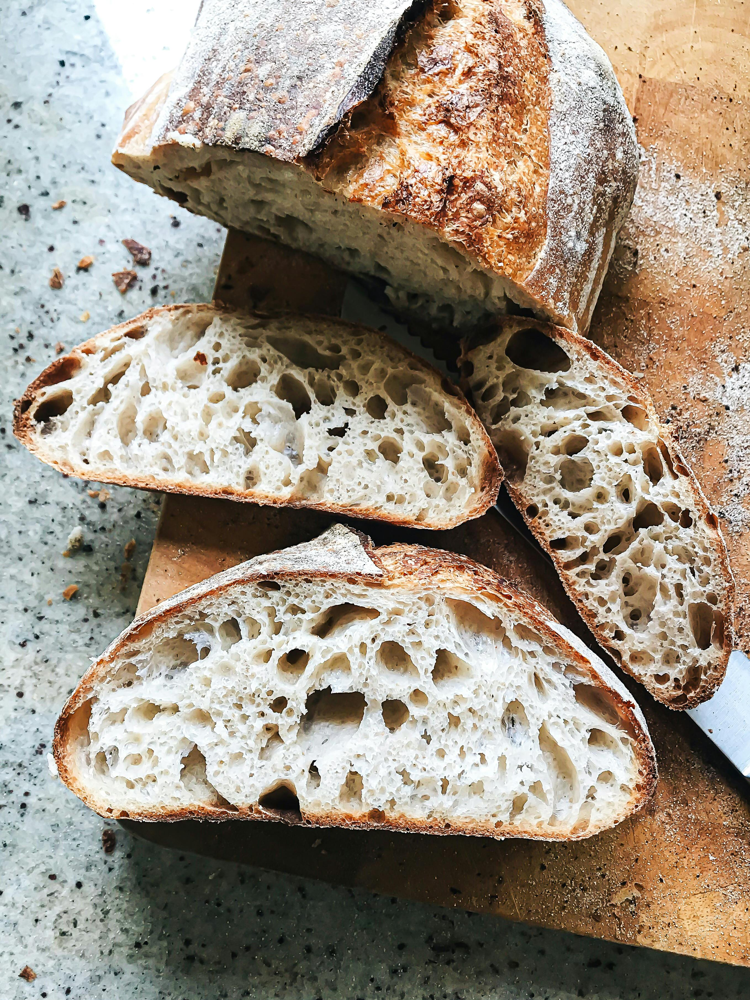

Small-Batch Sourdough
Back to Favourite Recipes
This is one recipe that I don't think I've tried yet so my opinion on this recipe will have to wait till I actually made it. However, small-batch recipes always interest me as I always end up struggling to finish whatever I baked. With nothing much to add except for the fact that I LOVE a good sourdough, let's dive right into the recipe.

What you'll need:
- 60g of sourdough starter
- 300g of all-purpose flour
- 30g of whole wheat flour
- 220g of water
- 8g of salt
Instructions
- Start by preparing the sourdough start the night before or at least 12 hours in advance. Let it rise for 6 hours and remember to do a float test.
- In a large bowl, mix all the dry ingredients, then add the water and mix to combine. Cover and let the dough rest for an hour.
- Stretch and fold the dough. If the dough is too sticky, apply water to your hands. Cover and let the dough rest for 30 minutes. Repeat this step two or three more times with 30 minutes of rest time each.
- Transfer the dough to a floured surface and shape the dough into a tight ball by folding the edges over to the center. Cover the bowl and let the dough rest for 3-3.5 hours if you're planning to bake on the day or 8-12 hours if you're planning to bake the next day.
- Once the dough is ready, remove from the bowl and place the dough on a parchment paper. Use a blade to score the dough and cover while the oven is preheated at 220 C.
- Place the dough in a dutch oven. Cover the dutch oven and place it inside the oven to bake for 30 minutes. After 30 minutes, remove the lid and continue to bake for another 20-25 minutes.
- Allow the bread to cool for at least an hour before slicing and serving.